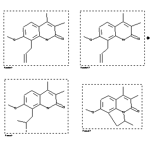

|  |
| FA | RX(1); FLST(1); RX(2) |
Reaction (1 of 1)
| Reaction ID | 4001332 |
| Reactant BRN | 7030943 |
| Reactant | 8-allyl-7-methoxy-3,4-dimethyl-1H-quinolin-2-one |
| Product BRN | 7032101; 7034004 |
| Product | 9-methoxy-2,5,6-trimethyl-1,2-dihydro-pyrrolo[3,2,1-ij]quinolin-4-one; 8-(2-iodo-propyl)-7-methoxy-3,4-dimethyl-1H-quinolin-2-one |
| No. of Reaction Details | 2 |
Reaction Details (1 of 1)
| Reaction Classification | Preparation |
| Yield | 48 percent (BRN=7034004); 12 percent (BRN=7032101) |
| Reagent | HI (57percent) |
| Solvent | acetic acid |
| Time | 20 hour(s) |
| Temperature | 65 |
| Citation Pointer | 5925546; Journal; Rodighiero, Paolo; Chilin, Adriana; Manzini, Paolo; Castellin, Andrea; Guiotto, Adriano; et al.; FRMCE8; Farmaco; EN; 49; 10; 1994; 607-614; |
Reaction Details (2 of 1)
| Reaction Classification | Preparation |
| Yield | 12 percent (BRN=7032101); 48 percent (BRN=7034004) |
| Reagent | HI (57percent) |
| Solvent | acetic acid |
| Time | 20 hour(s) |
| Temperature | 65 |
| Citation Pointer | 5925546; Journal; Rodighiero, Paolo; Chilin, Adriana; Manzini, Paolo; Castellin, Andrea; Guiotto, Adriano; et al.; FRMCE8; Farmaco; EN; 49; 10; 1994; 607-614; |
Reference (1 of 1)
| Citation Number | 5925546 |
| Document Type | Journal |
| Authors | Rodighiero, Paolo; Chilin, Adriana; Manzini, Paolo; Castellin, Andrea; Guiotto, Adriano; et al. |
| CODEN | FRMCE8 |
| Journal Title | Farmaco |
| Language Code | EN |
| (Series) Volume | 49 |
| Number | 10 |
| Publication Year | 1994 |
| Page | 607-614 |